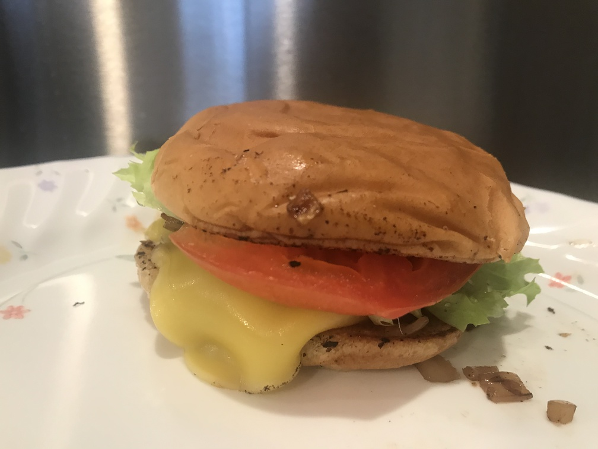

| Other | Meat | Veggie | Fruit |
|---|---|---|---|
| butter | lettuce | ||
| cheese (Chao vegan) | mushroom | ||
| hamburger buns | onion | ||
| mayonnaise | tomato | ||
| msg |
| instructions |
|---|
| Carmelize onions and mushrooms |
| Butter and toast the buns |
| Add mayo on the buns |
| Form a patty of carmelized onions/mushrooms sprinkle on msg |
| Add cheese to melt cheese on top |
| Transfer to bun |
| Add lettuce & tomato |
| Assemble veggie sandwich |